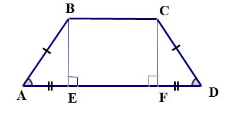

Трапеция

Входные данные
Основание и высота
Основание и угол
Основание
Верхнее основание
Высота
Угол
Вычисляемые характеристики
Диагонали
Неизвестные стороны
Периметр
Высота от основания к боковой строне
Вычислить
Очистить
Результаты